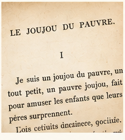
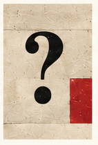
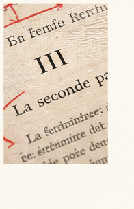

À lire cette semaine
Le Joujou du pauvre
BAUDELAIRE
Pourquoi ce petit récit est-il beaucoup plus étrange qu’il n’en a l’air ?
Lire le texte et la méthode →
Problématiser un texte,
c’est découvrir ce qui, en lui, demande une explication.
Pourquoi ce petit récit est-il beaucoup plus étrange qu’il n’en a l’air ?
Lire le texte et la méthode →
Un exercice interactif en 5 minutes pour apprendre à choisir.
Découvrir les gammes →
Des ressources, des exemples commentés et des pistes pour la classe.
Découvrir l’espace enseignants →
Problématiser, construire des réponses, trouver ce qui reste à expliquer, formuler une réalisation, choisir un élément textuel, produire un effet : chaque opération peut s’entraîner séparément.
Écrivez une véritable réponse : le moteur pédagogique de L’Atelier l’analyse.
Tester le prototype IA →